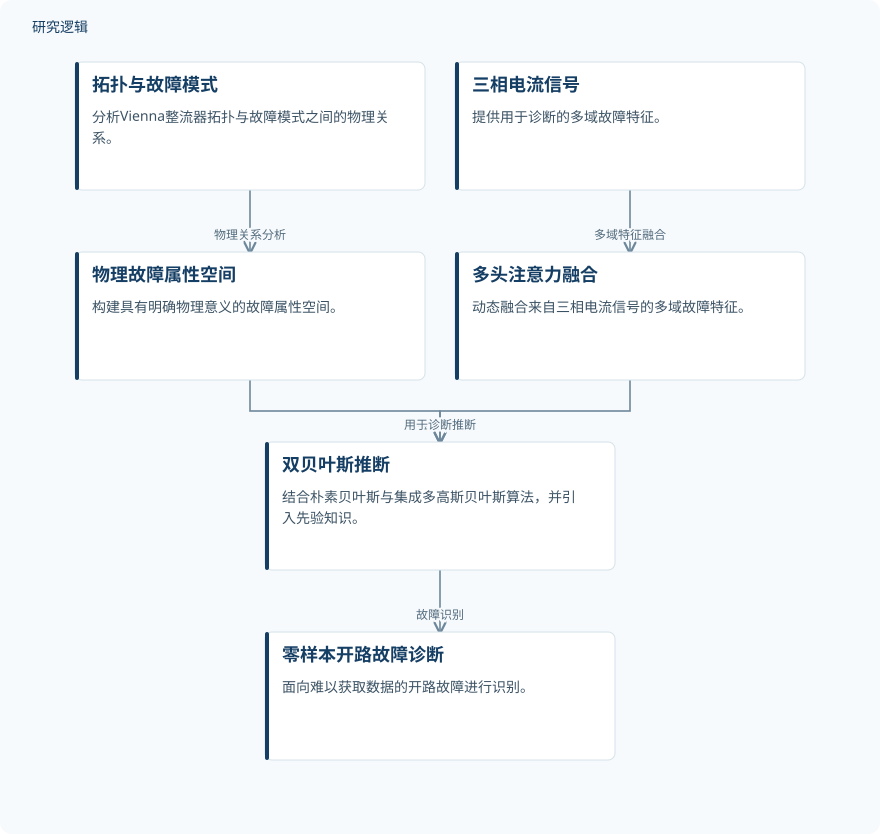

摘要解读
基于先验知识注入与注意力机制双贝叶斯网络的变换器零样本开路故障诊断
Zero-Shot Open Circuit Fault Diagnosis of Converter Based on Prior-Knowledge Injected Dual Bayesian Network With Attention Mechanism
解读更新 2026-11-10 16:05 · 依据公开摘要整理，未核验全文细节
真实场景中，全面采集并标注变换器故障数据往往代价高昂，开路故障又难以检测。这项研究将物理先验、多头注意力与双贝叶斯推断结合，探索对难以获取数据的故障进行零样本诊断，为理解智能运维如何减少对故障标签的依赖提供了一个案例。
文章目录
开路故障诊断为何受制于数据获取
电力电子系统承担能量转换与功率控制任务，其可靠性关系到工业电力系统、交通运输和航空航天等领域的稳定运行。摘要指出，开路故障检测困难，可能造成严重后果，因此诊断能力具有实际价值。
数据驱动方法在数据充足时能够发挥作用，但现实中获取全面的故障数据往往成本过高。本文针对的核心矛盾是：诊断模型依赖大量标注数据，而实际设备未必能够提供覆盖充分的故障样本。
以物理属性连接电流特征与贝叶斯推断
作者提出名为PKIDBAAM的零样本故障诊断方法。首先分析Vienna整流器拓扑与故障模式之间的物理关系，构建具有明确物理意义的故障属性空间，使先验知识成为诊断方法的一部分。
在信号侧，方法利用多头注意力机制，动态融合来自三相电流信号的多域故障特征；在推断侧，将朴素贝叶斯与集成多高斯贝叶斯算法结合为双贝叶斯框架，面向难以获取数据的开路故障开展识别。
依据摘要整理的零样本诊断过程示意


概括物理属性构建、电流特征融合与双贝叶斯诊断的关系，不代表论文原图或完整算法配置。
下载 SVG图示关系说明
实线表示相邻阶段的信息流，虚线表示跨阶段联系或反馈。
拓扑与故障模式 → 物理故障属性空间：物理关系分析；三相电流信号 → 多头注意力融合：多域特征融合；物理故障属性空间 → 双贝叶斯推断：先验知识注入；多头注意力融合 → 双贝叶斯推断：用于诊断推断；双贝叶斯推断 → 零样本开路故障诊断：故障识别
实验平台报告了优于传统模型的识别表现
摘要报告，该方法已在Vienna整流器实验平台上验证，表现显著优于传统经典机器学习模型。这支持了所提方法在该平台验证范围内的诊断价值，但摘要没有给出准确率、提升幅度或具体比较模型，因而目前只能作定性理解。
零样本设置与验证边界仍需查阅正文
仅凭摘要，尚无法判断样本规模、故障类别划分、训练与测试数据的关系，以及零样本设置如何具体实现。比较模型、评价指标、工况覆盖和验证范围也未展开；这些是当前资料的信息边界，不意味着论文没有开展相关工作。
摘要也不足以分别量化物理先验、多头注意力和双贝叶斯框架的贡献。平台验证不宜直接外推为跨设备、跨拓扑或现场长期运行均已有效，更不能将零样本诊断理解为完全不需要数据。
阅读启发：关注知识如何支撑未知故障识别
阅读启发：对智能运维读者，更值得追问的是物理属性如何联系已知与待识别故障，以及这种联系在何种条件下成立。进一步阅读时，可重点核对属性定义、零样本划分与比较条件，再判断该思路与自身设备诊断问题是否匹配。
以上为本站阅读启发与建议，不是论文已验证的结论。